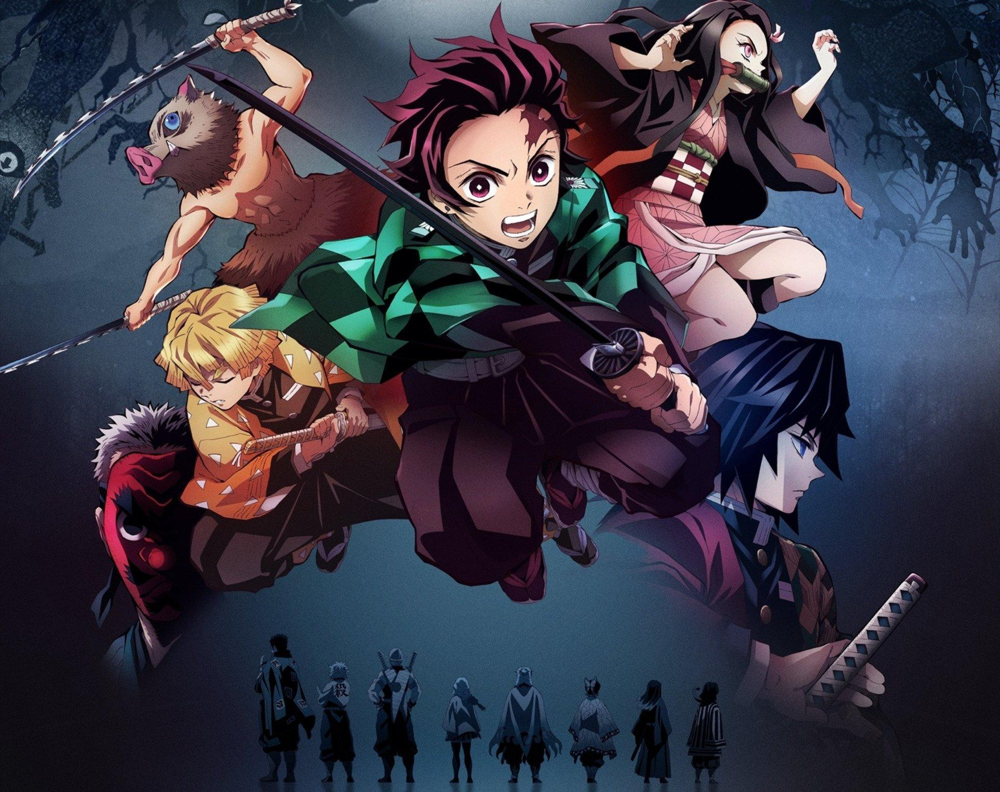
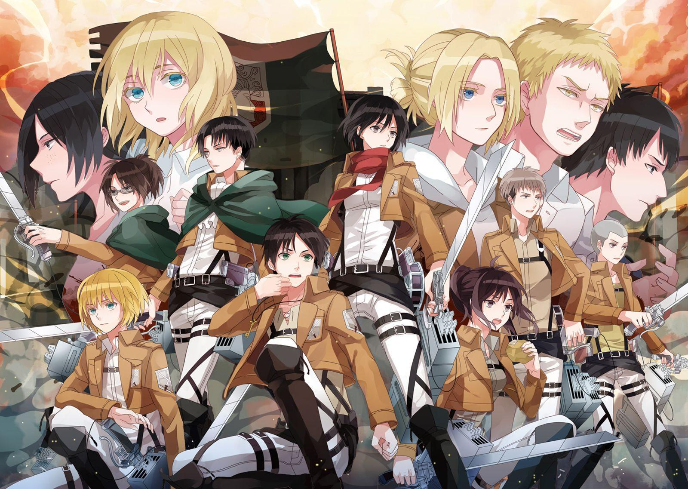

Daftar list anime
| Judul | Deskripsi | Gambar | Video |
|---|---|---|---|
| Kimetsu No Yaiba | Kimetsu no Yaiba (bahasa Jepang: 鬼滅の刃, terj. har. "Pedang Penghancur Iblis"[4]), yang diterbitkan di Indonesia dengan judul Demon Slayer: Kimetsu no Yaiba, adalah sebuah seri manga Jepang yang ditulis dan diilustrasikan oleh Koyoharu Gotōge. Ceritanya mengisahkan tentang Tanjiro Kamado, seorang anak laki-laki yang menjadi pembasmi iblis setelah keluarganya dibantai dan adik perempuannya yang bernama Nezuko diubah menjadi iblis |  |
|
| Attack On Titan | Sekilas Cerita Manga Attack on Titan. Sesuai dengan genrenya post-apocalyptic, Attack on Titan berkisah tentang suatu zaman dimana umat manusia menghadapi ancaman kepunahan akibat serangan para Titan (manusia raksasa). Yang mengerikan adalah para Titan ini benar-benar sengaja mengincar manusia untuk “dimakannya”. |  |
|
| Baku No Hero Academia | Boku no Hīrō Akademia), yang diterbitkan di Indonesia dengan judul My Hero Academia, adalah sebuah seri manga shōnen Jepang bertema pahlawan super yang ditulis dan diilustrasikan oleh Kōhei Horikoshi. Manga ini mulai dimuat dalam majalah Weekly Shōnen Jump sejak bulan Juli 2014, dan telah dibundel menjadi 24 volume tankōbon hingga bulan Agustus 2019. Ceritanya mengisahkan tentang Izuku Midoriya, seorang anak lelaki tanpa kekuatan super (yang disebut quirk) di dunia tempat hal seperti itu sudah menjadi sesuatu yang umum, tetapi masih bercita-cita untuk menjadi seorang pahlawan. Ia kemudian bertemu dengan pahlawan terhebat di Jepang, yang membagi quirk miliknya kepada Izuku setelah melihat potensinya, dan kemudian memasukkannya dalam sebuah SMA prestisius yang dikhususkan untuk para pahlawan muda yang sedang dalam pelatihan. |
|
Search